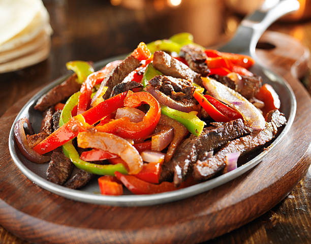

Home
Señior McDonald's Famous Fajitas

You'd swear they came off the side of a taco truck....
Just trying to keep a tradition alive
Kids, ya'll come gather round the time machine called "Old Man's Memories" and let me tell you
a story about my escuela secondaria profesor de español. His name was Señior Mac and he was the most take-no-sh*t teacher I had in school,
but he made some awesome fajitas. As legend had it, Señior Mac spent his youth in the Peace Corps teaching Spanish language classes
in Central America. It was during his time in Costa Rica that some friends had shown him this fajita recipe. What Señior Mac learned there,
he brought with him to teach others. These fajitas were so good, he was able to use them as a fund rasier to take a group of students to Costa Rica
every year over spring break.
It's a simple recipe that honeslty takes more waiting that cooking, but it's completely worth it.
The Ingredients
- 1-2lbs of skirt steak/chicken breast or thigh
- Fajita Seasoning of Choice
- 2 tblsp lemon juice
- 1 tblsp lime juice
- 1 Onion
- 1-2 Bell Pepper
- Cilantro
- Avacado Oil
- 1-2 tblsp of Butter
- Tortillas of choice
- Shredded Cheddar/Colby Jack
- 1 Bottle of Zesty Italian Salad Dressing
I'm seriously you guys
The Preparation
- Trim steak/chicken as needed
- Season the meat liberally, like a lot, like....way more than you think is necessary
- Place in a gallon sized zip-loc bag and add the lemon and lime juice
- Add enough Zesty Italian to the bag to completey submerge it's contents
- Put the bag o' meat in a bowl to catch leaks and place in the refridgerator to marinade. 48hrs for Beef, 24hrs for the Chicken
- When fajita day is upon you, start by slicing your onions and bell peppers
- Since we are gonna do these Tex-Mex style, sautee the onions and peppers in a little butter and avocado oil
- Grill fajitas till done. Approx 140° for the beef and 165° for chicken
- Slice against the grain for maximum tenderness
- Serve on freshly warmed tortillas, topped with those onions and peppers from earlier
- Finish off with chopped cilantro and some shredded cheese
- Make sure to have a proper siesta after the fiesta